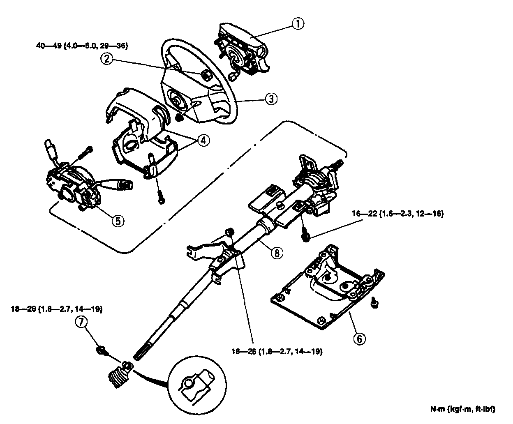
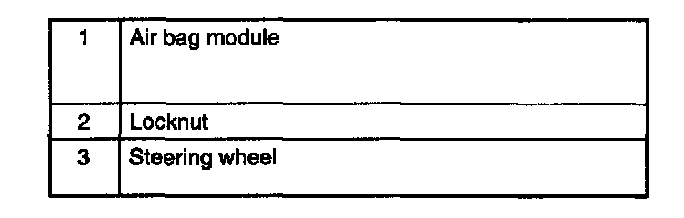
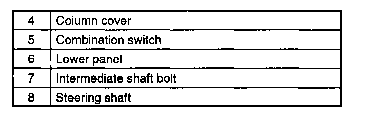

Removal and Installation
REMOVAL/INSTALLATION


1. Remove in the order indicated in the table.
2. Install in the reverse order of removal.
3. After installation, verify that the horn sounds. If the horn does not sound, remove the air bag module and connect the module connectors.
Steering Wheel Removal Note
Caution:
- Do not try to remove the steering wheel by hitting the shaft with a hammer. The column will collapse.
- Set the wheels in the straight-ahead position, remove the steering wheel by using a suitable puller.